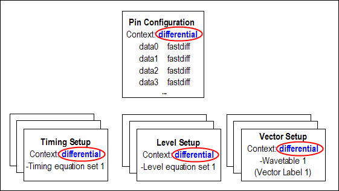
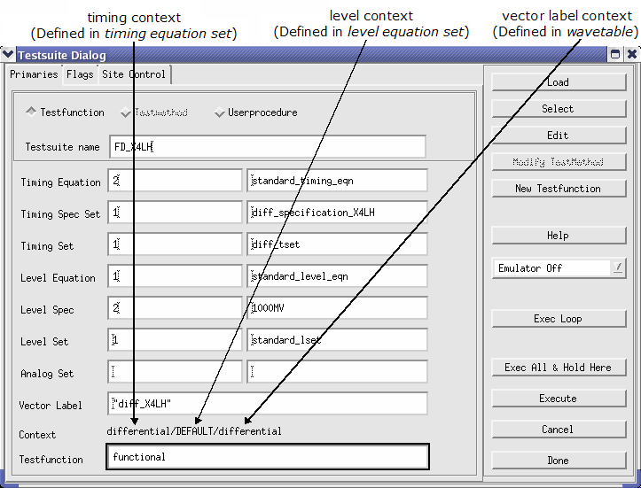
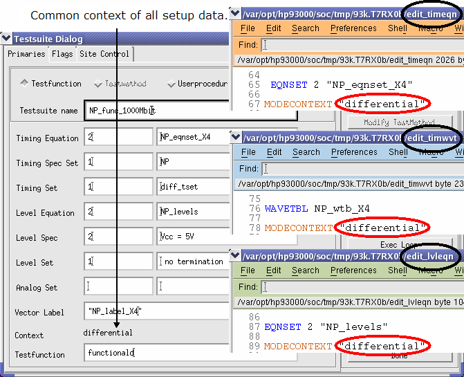

Context list
The Context list is part of the Digital Pins editor.
The context is just an arbitrary name (except the name "DEFAULT", when being selected, the pins will automatically be defined as standard pins and allocated the mode "std") which identifies a particular pin configuration.
After you have defined one pin configuration and assigned a context to it, you can define another pin configuration (for example, with different mode assignments) and assign a different context name to it, and so on.
The use of contexts in the pin configuration allows you to associate timing, level and vector setups to a particular pin configuration. You must assign a context with the same name as an attribute to:
- Level equation sets
- Timing equation sets
- Wavetables
- Vector labels (via the wavetable definition)
This is shown in the figure below.

In the test suites of a test flow, you combine timing, level and vector data.
For a valid setup, the level, timing and vector data for a particular test suite have to belong to the same context.
Example
The figure below illustrates an invalid allocation of contexts which are mixed.

The figure below shows a valid context configuration where the context you allocated to the pins has also been allocated to the corresponding timing, level and vector label.

Functional changes
- Introduced before SmarTest 6.3.2
- SmarTest 6.5.0: The Context list is only located in the Digital Pins editor.